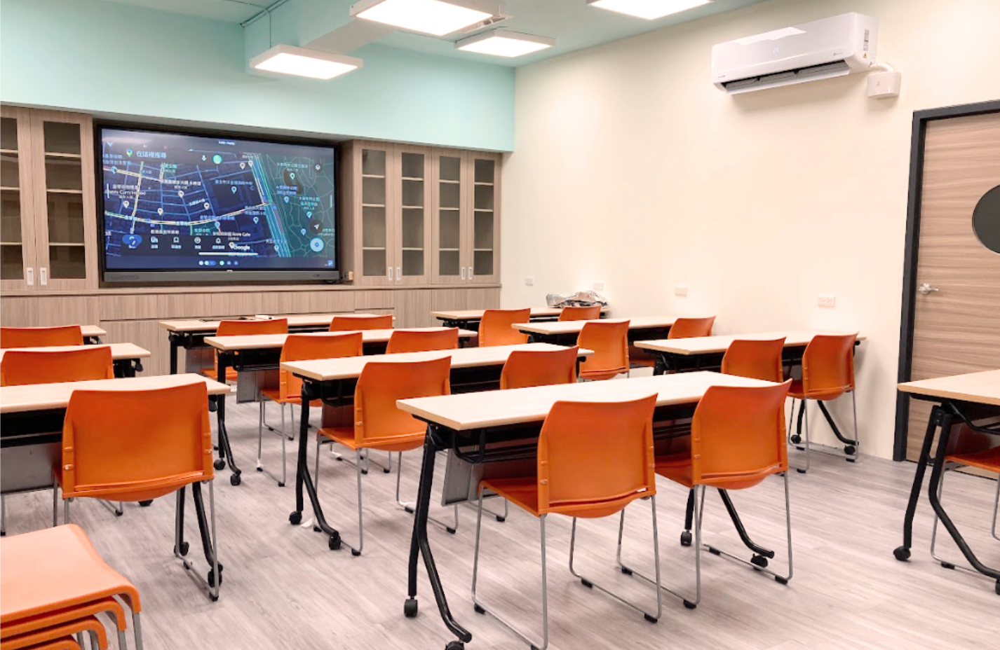

五樓廣場
入口處可供學生到校離校打卡、備有鋼琴和小舞台可以表演才藝。
2-4人討論室
可以讓學生和老師進行討論和晤談，備有電視螢幕可以投放。
8-12人討論室
可以進行課程或開會討論，備有電視螢幕可以投放。
自主學習教室
可以進行自主學習或是用餐，有舒適的沙發座椅可以休息。
協作坊學習教室
可以進行整年級的團體課程，備有多台環景投影和螢幕，桌椅可以輕鬆且靈活的移動，功能非常多。
會議室

可供老師和學生開會討論會進行發表。
餐飲吧台
可供老師和學生飲食和烹飪，備有廚具、瓦斯爐、水槽及冰箱。
跨域合作教室
生活科技與資訊科技教室，備有大量專業機械與安全設備。
五樓廣場
入口處可供學生到校離校打卡、備有鋼琴和小舞台可以表演才藝。